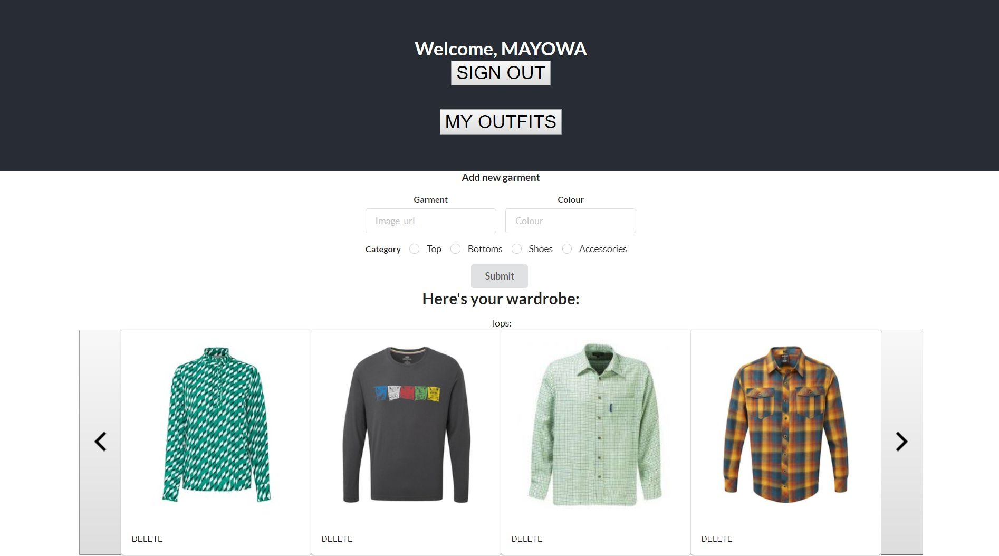
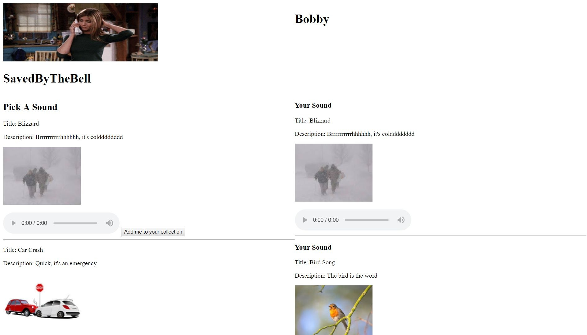
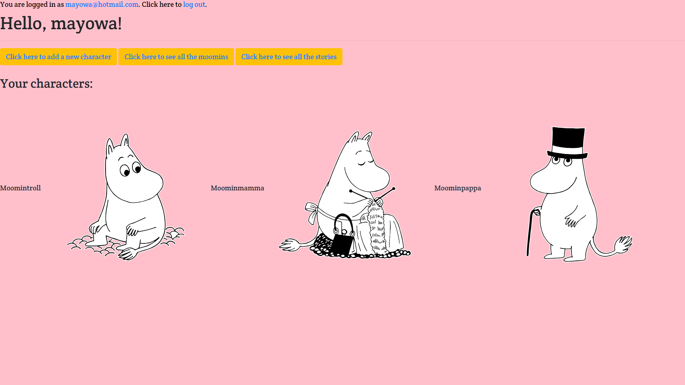

Mayowa Adeniyi
I am a full stack web developer with a passion for coding and developing simple solutions to complex problems. I have experience in Ruby, Rails, JavaScript(ES6+) and React.
I appreciate the uniqueness of programming in that it combines my love for maths with elements of architecture. I get to use the fun analytical side of maths to break down problems and assimilate them, whilst using the creative side of architecture to create new solutions and eventually brand new spanking apps!
Skills
- React
- Redux
- JavaScript(ES6+)
- Ruby
- Rails
- HTML5
- CSS
- PostgreSQL
- Git
Portfolio
Fashion Project

A dynamic web app using React and Rails that lets users upload their wardrobe collection, create new outfits from them based on different styles and save those outfits online. User authentication is done using JWT tokens. Heavily inspired by my interest in fashion and wanting to look fashionable whilst being able to save time.
SavedByTheBell

A responsive app using Javascript and Rails that lets users add sounds to their own music collection and create a playlist. Inspired by my love for music as well as my usage of spotify and the inner workings of music platforms.
Moomins

An app built in Rails using restful routes that lets users add characters to their account and view the stories associated with each character. Inspired by my childish side and my interest in all things cartoonish.
Why code
I like being able to find solutions to problems
- Maths has been my favourite subject as I have enjoyed the journey from looking at the question, devising a way to work it out then calculating the answer.
When I found coding, it helped bridge the gap between problem-solving and creativity
- Through coding, I can not only find solutions to problems but create new solutions. This takes me to a new level as maths is all about finding the right answer, but coding is about creating the answer. I find coding on the border between challenging and exciting because it incorporates elements of maths in an architectural way and I find myself really intrigued by it.
Solutions help bring happiness to people around you
- One of the best parts about coding is thinking of a new app or idea to make that was based off inspiration or interest and turning it into a project that other people can benefit from. You can help people by helping yourself which is amazing because it helps you think of the bigger picture when you’re doing or starting it. It is great to see how programming can heighten user experience and aid in transforming parts of our lives.
Interests
I am part of a local amateur football team. We meet up every week and it is a nice opportunity to do some exercise and have fun. It is very easy to lose yourself in the world of all things code! I am also part of a local youth group, where I meet up with young people near my area and participate in different events. The events range from playing rounders to having a dance competition to having to act out a random scene. Helps to remind me I am not a robot!
Education
Flatiron School
Portsmouth University
BEng in Mechanical Engineering